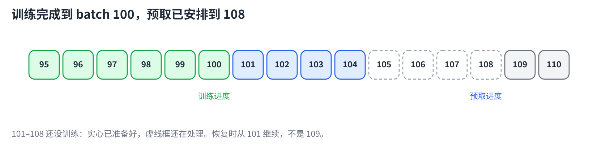
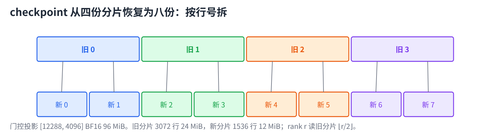
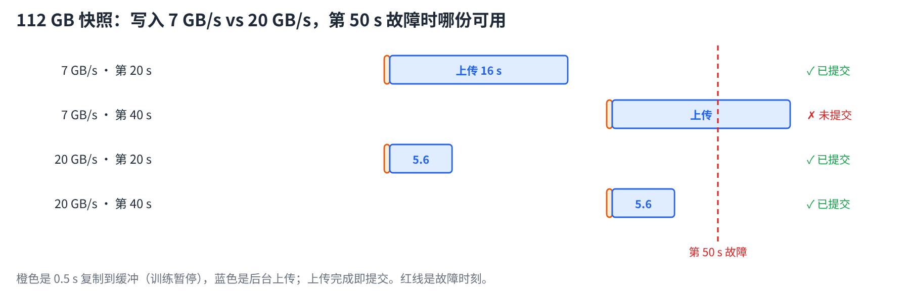
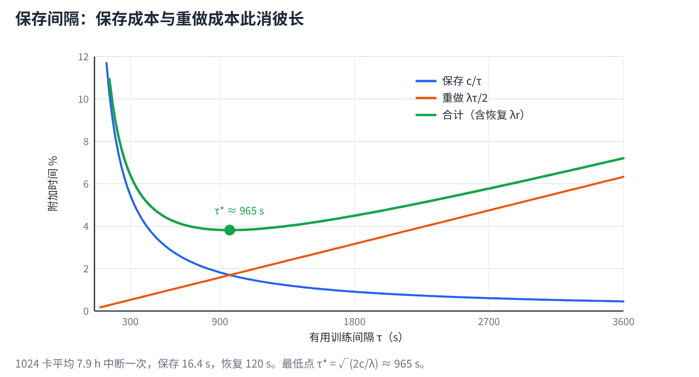
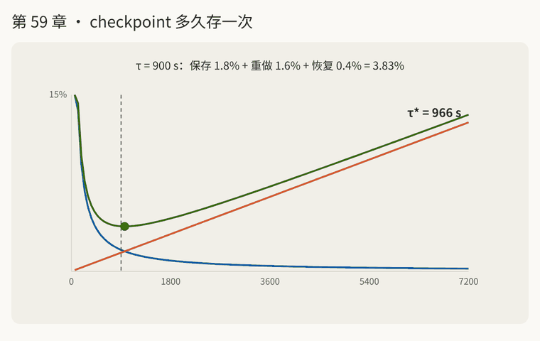

第 59 章 · 数据输入、checkpoint 与故障恢复：几周的作业怎么扛住中断
本地运行
git clone https://github.com/wikieden/ai-infra-from-constraints
cd ai-infra-from-constraints/code/notebooks
pip install jupyterlab torch numpy
jupyter lab ch59_data_checkpoint.ipynb也可以下载后直接用 VS Code 打开 .ipynb 运行。需要 GPU 的章节在 Colab 里选「代码执行程序 → 更改运行时类型 → GPU」。
本章回答：每秒只要 0.37 MB 的 token ID，为什么 CPU 数据准备也能拖慢整个集群？恢复时为什么从 batch 101 而不是 109 继续？checkpoint 要存哪些东西、TP4 怎么重分片成 TP8？异步保存什么时候才算"可用"？保存间隔取多少最划算（τ* = √(2c/λ)）？一张慢卡让 48 卡多等多久，该等、该摊、还是该踢？损失尖峰怎么改保存周期？
讲解日期：2026-11-24 · 上一章：第 58 章 流水调度与通信重叠 · 下一章：第 60 章 强化学习训练系统
对应原文：materials/ai-infra-book/manuscripts/10-训练系统.md§10.4 L489–L626（图 10-30 至 10-36）
本章缩写：MTBF = Mean Time Between Failures（平均 / 故障 / 间隔时间）· API = Application Programming Interface（应用 / 编程 / 接口）· SU = Scalable Unit（可扩展 / 单元，32 台 DGX）· straggler（掉队者）。全部缩写见 缩写与术语表
讲解
第一步：数据输入：字节少，准备慢（2026-11-24）
类比：中央厨房送餐。 送到门口的只是一个小盒子，可备菜、切配、装盒要人手；人手不够，再快的车也只能等。
原文 L493–L507：25 天预算要 46,300 token/s ≈ 每秒 5.7 条 8192 token 的序列；按 int64 传 token ID 只有约 0.37 MB/s。但每个 CPU 准备进程每秒只做 2 条：两个进程 4 条/s 不够，三个才够。
- 设计案例用四个进程（8 条/s）；48 卡每步 52.3 s 处理 384 条，需要 7.3 条/s。准备比消耗快，短暂变慢后能补满预取队列。
- 再给每步 0.5 s 平均输入等待：32 卡 78.9 s、48 卡 52.8 s。
预取进度 ≠ 训练进度：

图 59-1 · 101–108 还没训练，有的已准备好、有的还在处理。恢复时从 101 继续，否则跳过八个 batch。
- 队列只能暂时补准备速度的下降；长期更慢，队列终会取空。checkpoint 写入同理：产生速率超过存储能持续接收的速率，暂存缓冲终将占满。
- 1800 s 保存一次、约 115 GB，平均只有约 64 MB/s；停顿单独算。
一句话：输入看 CPU 准备速度，不看字节；恢复要按训练进度，不按预取进度。
第二步：checkpoint 要存什么（2026-11-24）
类比：游戏存档。 只存角色属性不够，还要存背包、任务进度、随机种子，读档后才能接着玩同一局。
原文 L509–L527：继续训练需要：权重、两份矩、步数、学习率状态、随机状态、下一批数据的组成。一步结束时梯度会重新产生，所以存 BF16 权重 2 + FP32 主权重 4 + 两份矩 8 = 每参数 14 字节，Qwen3-8B 约 115 GB。
重分片 TP4 → TP8：门控投影 \([12288, 4096]\) BF16 96 MiB，四分每片 3072 行 24 MiB，八分每片 1536 行 12 MiB。目标 rank \(r\) 读旧分片 \(\lfloor r/2 \rfloor\)，偶数取前半、奇数取后半。主权重和两份矩按同样行范围拆，这个矩阵在 checkpoint 里共 \(96 \times (1 + 2 + 2 + 2) = 672\) MiB。ByteCheckpoint 这类系统用全局形状、偏移、长度描述张量。

图 59-2 · 内容和顺序不变，改的是每张卡负责的行范围。
- 打包器的余数也要存：打包器手里留着 2000 个 token，下一份数据给 6192 个拼成一条；丢了这 2000 个，下一条序列的前缀、注意力关系和标签都会变。
一句话：存档要能接着下同一步棋：优化器历史、数据位置、打包余数、随机状态一个都不能少。
第三步：异步保存什么时候算数（2026-11-24）
类比：寄快递。 把东西装进箱子交给快递员（复制到缓冲）你就能走了，但对方签收（提交）之前，丢件了还是得从上一个寄到的包裹算起。
原文 L529–L553：同步保存写完才继续；异步保存复制到独立缓冲就继续，后台写完并提交后才能用来恢复。
例：112 GB 快照；第 20、40 s 捕获，各 0.5 s 复制后上传：
| 合计写入 | 提交时刻 | 第 50 s 故障恢复到 | 重做 |
|---|---|---|---|
| 7 GB/s（Good 档，16 s/份） | 36.5、56.5 s | 第 20 s | 30 s |
| 20 GB/s（Better 档，5.6 s/份） | 26.1、46.1 s | 第 40 s | 10 s |

图 59-3 · 前台暂停都只有两次 0.5 s；写入越快，故障时能恢复到越近的进度。
- 每 10 s 一份要 11.2 GB/s > 7 GB/s，队列一直长；每 20 s 一份 5.6 GB/s 才跟得上。
- 数据文件之外还要提交元数据：CPU 实验里保存接口 7 ms 就返回，元数据 48 ms 才提交；提交前杀进程，恢复程序选上一份完整的。
一句话：异步保存让训练早恢复，但只有提交完成的快照才能用。
第四步：保存间隔的平方根公式（2026-11-24）
类比：写论文多久存一次盘。 存得太勤，光存盘就耽误工夫；存得太少，死机一次丢一大截。
原文 L555–L600：保存一次 \(c\)，两次之间有用训练 \(\tau\)，作业故障率 \(\lambda\)，恢复 \(r\)：
例：Meta 统计 1024 卡作业平均 7.9 h 中断一次（每卡约 337 天）。115 GB 以 7 GB/s 保存 \(c \approx 16.4\) s，\(r = 120\) s：\(\tau^* \approx 965\) s。
| 间隔 | 保存 | 重做 | 恢复 | 合计 |
|---|---|---|---|---|
| 300 s | 5.5% | 0.5% | 0.4% | 6.4% |
| 900 s | 1.8% | 1.6% | 0.4% | 3.8% |
| 1800 s | 0.9% | 3.2% | 0.4% | 4.5% |

图 59-4 · 最低点平缓，可以取附近方便的值。卡数翻倍或保存快一倍，最优间隔都缩成 1/√2。
- 设计案例卡少：1800 s 间隔时 32 卡附加 1.02%、48 卡 1.08%，只差 0.06 个百分点。
- 中断要花真金白银：MiMo-V2.6 的 RL 后训练公开看板，Pro 每小时约 2.06 万美元，重启 14 次、中断累计 30.1 h（23.6%），折合约 61.9 万美元；一次 infra 错误没及时发现，作废了约 4 h。中断减半能省约 31 万美元。
一句话：\(\tau^* = \sqrt{2c/\lambda}\)；保存成本和重做成本相等处最省。
第五步：掉队者与损失尖峰（2026-11-24）
类比：全班等最后一个交卷。 人越多，越可能有人特别慢；是等他、把他的题分给别人、还是让他出去，看他慢多少、慢多久。
原文 L602–L625：同步数据并行每步等最慢的卡。\(N\) 个独立正态最大值的期望约为 \(\mu + k_N\sigma\)：
| 卡数 | \(k_N\) | 每步，σ = 2% | σ = 5% |
|---|---|---|---|
| 8 | 1.42 | 54.3 s | 56.5 s |
| 48 | 2.23 | 55.1 s | 58.6 s |
| 1024 | 3.25 | 56.2 s | 61.3 s |
无波动 52.8 s；48 卡 σ = 5% 多约 5.8 s，占第 61 章 14.4 s 余量的四成。慢卡可以从梯度桶上的等待时间检测出来。
一张卡慢到 \(\mu + 3\sigma\)：
- 等待：8 卡多等约 \(1.65\sigma\)，48 卡 \(0.78\sigma\)，1024 卡 0（其余卡本来就有更慢的）。
- 重分配：均值变 \(\mu N/(N-1)\)；σ = 2% 时 48 卡 56.2 s、8 卡 61.6 s，都比等待更慢。
- 驱逐：从上一个 checkpoint 重启，代价 \(\tau/2 + r\)；\(\tau = 600\) s 时 420 s ≈ 8 步。一次抖动只损几秒，持续多步才值得踢。MegaScale 报告约 0.5% 的机器明显变慢。
损失尖峰也要回滚，等同于整个作业受到的冲击：
48 卡、尖峰每 7 天一次：\(\tau^*\) 从约 4,458 s 缩到 3,150 s；1800 s 处附加比例 1.08% → 1.25%，完成时间多约 0.03 天，不改方案。
场景代码：PyTorch DCP 异步保存，返回 future，提交完成才算数（真实 API）：
import torch.distributed.checkpoint as dcp
state = {"model": model.state_dict(), "optim": opt.state_dict(),
"step": step, "data": loader.state_dict(), "rng": torch.get_rng_state()}
fut = dcp.async_save(state, checkpoint_id=f"/ckpt/step{step}") # 复制后立即返回
# ……继续训练
fut.result() # 等后台写完并提交，之后这份才能用于恢复
一句话：同步训练按最慢的卡计时；偶尔慢就等，持续慢才踢。
动画演示：保存间隔怎么取

可交互版：animations/59-data-checkpoint.html（滑块：卡数 8–4096；保存耗时 2–60 s；恢复耗时 0–600 s；保存间隔 60–7200 s）。
怎么看：
- 三条曲线：保存成本 c/τ（蓝）、重做成本 λτ/2（橙）、合计（绿），竖线是当前间隔，圆点是最优 τ*（第四步）；
- 右上角是当前间隔的三项分解；
- 播放：1024 卡 900 s（3.8%）→ 300 s（6.4%）→ 48 卡 1800 s（1.08%）→ 4096 卡（τ* 缩短一半）。
练习与作答记录
题 1（第三步）：快照 80 GB、写入 10 GB/s、复制 0.5 s，第 30、60 s 捕获。第 70 s 故障能恢复到哪？重做多少秒？
作答记录：（待作答）
题 2（第四步）：2048 卡（每卡 MTBF 337 天）、保存 20 s、恢复 300 s。最优间隔多少？那时附加比例多少？
作答记录：（待作答）
题 3（第五步）：256 卡，\(k_{256} \approx 2.8\)，μ = 30 s、σ = 3%。期望每步多等多少秒？一张卡持续慢到 μ + 5σ，驱逐代价按 τ = 900 s、r = 120 s 算，大约几步回本？
作答记录：（待作答）
口诀
送的是小盒子，备菜要人手；读档从训练到的地方，不从备好的地方；
存档要存背包、进度和种子；
交给快递员就能走，签收前丢了还算上一个；
存盘太勤耽误工夫，太少死机丢一截，根号二 c 除以 λ；
全班等最后一个，偶尔慢就等，一直慢才请出去。
本章复习卡片
I198（输入看 CPU 准备：0.37 MB/s 也要 3 个进程；从 batch 101 恢复；checkpoint 14 字节/参数 115 GB、重分片、打包余数）、I199（异步保存提交才可用：7 GB/s 恢复到 20 s、20 GB/s 到 40 s；L(τ)、τ* = √(2c/λ) = 965 s、表 6.4 / 3.8 / 4.5%）、I200（掉队者 k_N 1.42 / 2.23 / 3.25；等待、重分配、驱逐；损失尖峰 τ* 4458 → 3150 s）。练习做完后，按答错、卡住的地方再补。
附录 · 延伸阅读
留给以后深入学习用，不影响本章主线。★ 是建议先读的。
推荐阅读
| 读什么 | 读哪里 | 读它为了什么 |
|---|---|---|
| ★ AII 第 10 章 | §10.4 L489–L626 | 本章原文 |
| Young 1974 / Daly 2006（checkpoint 间隔） | 一阶最优公式 | τ* 的来源 |
| Meta 研究集群可靠性统计（原文脚注 interval） | 作业规模与中断 | 7.9 h / 47.7 天 |
| PyTorch Distributed Checkpoint 文档 | async_save |
异步保存接口 |
| 第 43 章 从通信改进到任务完成 | 故障开销 ε | 前置 |
数学原理
- 一阶最优：\(L(\tau)\) 对 \(\tau\) 求导，\(c/\tau^2 = \lambda/2\)。
- 极值统计：\(N\) 个独立正态最大值的期望约随 \(\sqrt{2\ln N}\) 增长。
- 队列：产生速率持续超过处理速率，有限缓冲必然溢出。
公式清单
| 公式 | 意思 |
|---|---|
| 每参数 14 字节 | 训练 checkpoint |
| \(L(\tau) = c/\tau + \lambda\tau/2 + \lambda r\) | 附加成本 |
| \(\tau^* = \sqrt{2c/\lambda}\) | 最优保存间隔 |
| \(E[\max] \approx \mu + k_N\sigma\) | 掉队者 |
| \(\lambda = \lambda_{\mathrm{hw}} + \lambda_{\mathrm{spike}}\) | 加上损失尖峰 |
代码对照：把本章的数字用代码算一遍
代码
ai-infra/solutions/chapter-code/ch59_data_checkpoint.py，测试tests/test_ch59.py：
bash cd ai-infra/solutions/chapter-code uv run python ch59_data_checkpoint.py uv run pytest tests/test_ch59.py
| 讲义 | 写法 | 跑出来 |
|---|---|---|
| 第一步 | workers_needed(46296) |
3 个 |
| 第三步 | commit_times([20, 40], 112e9, bw) |
36.5 / 56.5、26.1 / 46.1 s |
| 第四步 | tau_opt(c, job_rate(1024))、overhead(...) |
965 s；6.4 / 3.8 / 4.5%；1.02 / 1.08% |
| 第五步 | expected_max_std(n) |
1.42 / 2.23 / 3.25；τ* 4458 → 3150 s |
代码里才看得到的 3 件事：
- checkpoint 用 14N = 114.7 GB，保存 16.38 s；用 115 GB / 16.4 s 算出的 τ* 会差几秒（4465 vs 4458）。
commit_times让第二份必须等第一份传完才开始上传，所以 7 GB/s 时第二份是 56.5 s，不是 40.5 + 16。expected_max_std用数值积分 \(\int x \cdot N\varphi(x)\Phi(x)^{N-1}dx\)，步长 0.001 已足够到小数点后两位。
自己改一改（不影响练习答案）：
- 给
overhead加"异步保存只停 0.5 s，但恢复点平均晚 c 秒"的版本。 - 把
commit_times改成可以并行上传两份，看提交时刻怎么变。 - 用
expected_max_std画 k_N 随 N 的曲线，和 \(\sqrt{2\ln N}\) 比。